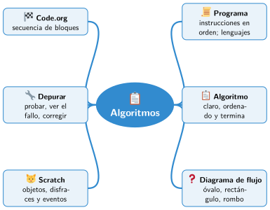

Bloque II · Programar con bloques
UD04 Algoritmos
Sesiones
- Sesión 4.1 Qué es un programa
- Sesión 4.2 Algoritmos: pasos claros y en orden
- Sesión 4.3 Diagramas de flujo
- Sesión 4.4 Primeros pasos con bloques: Code.org
- Sesión 4.5 El entorno de Scratch
Al terminar la unidad
Mapa mental de la unidad

✏️ Repasa la unidad con el mapa: tapa una rama y explica en voz alta lo que pone.